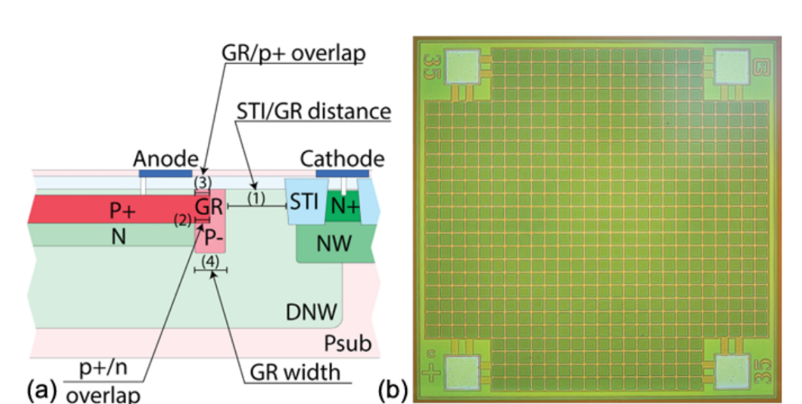
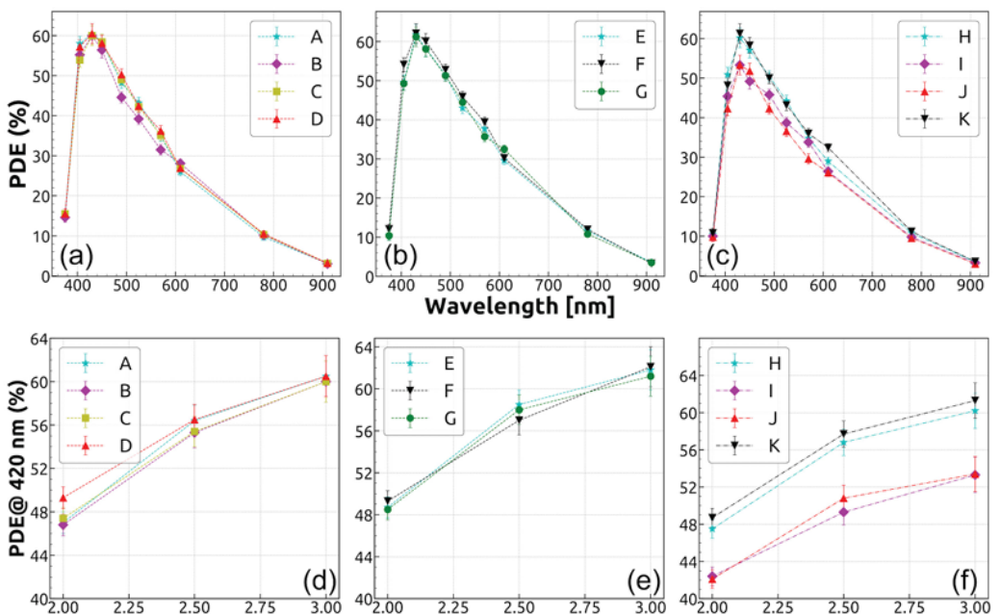
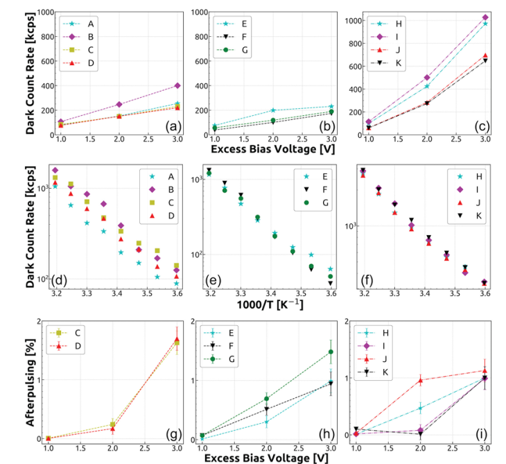
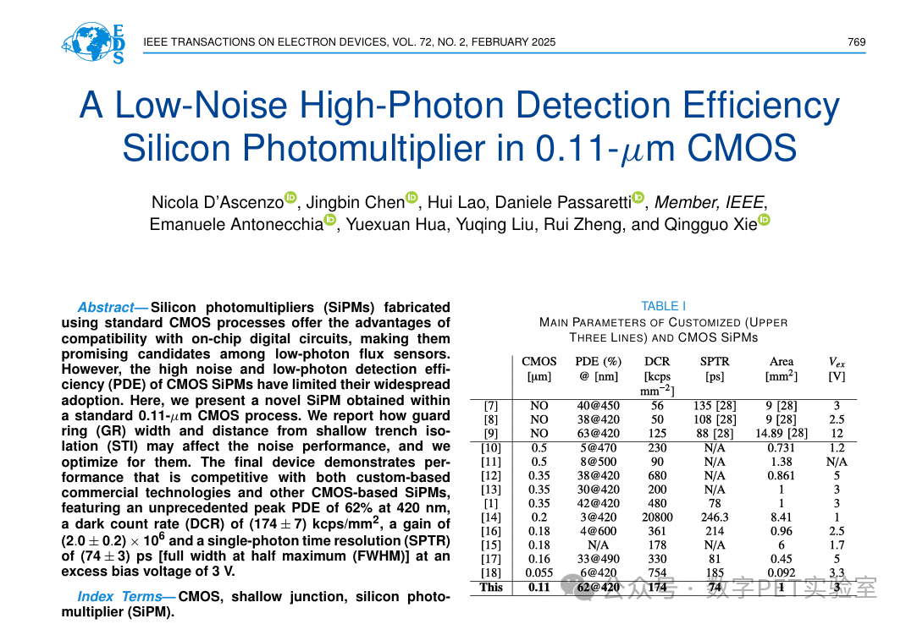
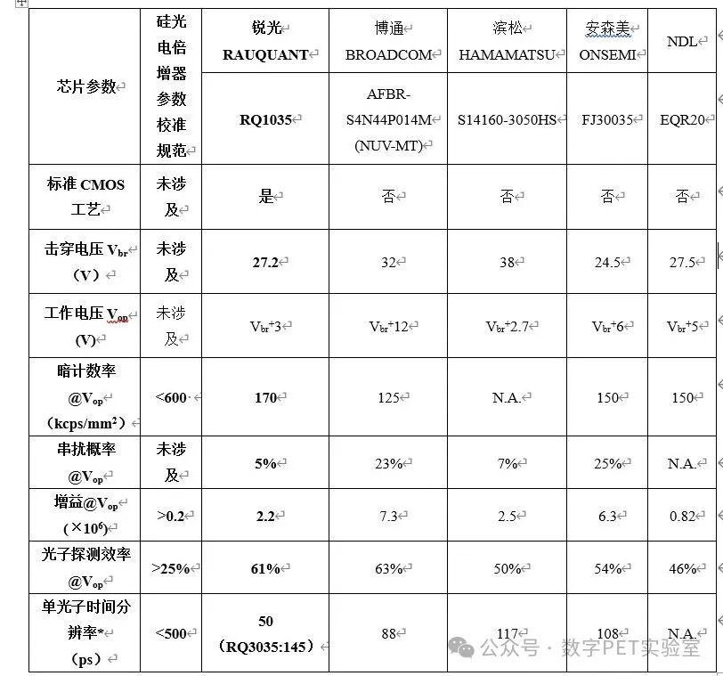

Equipping the “Photon Hunter” with “Magic Chips”: The New Generation of Standard CMOS Process Silicon Photomultipliers Is Here!
What is a Silicon Photomultiplier?
Imagine a "super camera" capable of capturing individual photons in complete darkness—this "photon hunter," which performs photoelectric detection in extremely low-light environments, is the Silicon Photomultiplier (SiPM). Serving as the "industrial eye" for nuclear medicine PET/CT, particle physics detection, LiDAR, and astronomical observation, it can capture extremely faint optical signals.
Currently, most SiPMs require specialized custom processes for fabrication. The high degree of customization leads to high costs, complex manufacturing, and limited production capacity, making on-chip integration with signal processing circuits particularly challenging.
What is the CMOS Process?
CMOS (Complementary Metal-Oxide-Semiconductor) is a mature technology for chip manufacturing, commonly used to produce mobile phone chips. Using the CMOS process to create SiPMs is the most cost-effective production path.
(1) It directly utilizes mature CMOS production lines, enabling mass production with significantly lower unit costs compared to commercial custom processes, and benefits from faster technological iteration.
(2) It enables the integration of single-photon sensors and digital readout electronics on the same chip. This technological advancement will drive the development of precision sensing methods, with applications spanning industries including nuclear medicine, automotive engineering, and consumer electronics.
What are the Challenges with CMOS-based SiPMs?
The CMOS process itself is not tailored for SiPMs. SiPMs fabricated directly using standard CMOS processes typically suffer from low Photon Detection Efficiency (PDE) (< 30%) and often have high noise levels (~MHz).
Comparison of performance parameters for SiPMs fabricated using custom processes (e.g., Hamamatsu's S13360 series, Onsemi's FJ30035, Broadcom's NUV-MT series) versus different CMOS process nodes (including 0.5μm, 0.35μm, 0.2μm, 0.18μm, 0.16μm, and 0.055μm).The chart reveals that the 0.18 μm and 0.35μm CMOS process nodes have achieved significant breakthroughs. However, SiPMs made with smaller feature size CMOS processes often exhibit decreased PDE and increased DCR.
So, the question is!
Why do smaller CMOS processes lead to degraded SiPM performance?
This is attributed to increased doping concentrations as the feature size shrinks. It's like playing hide-and-seek in an increasingly smaller room. While a smaller room (smaller feature size) makes it easier to find someone quickly (faster carrier migration), peeling wallpaper (STI deep-level defects) and overcrowding (high doping concentration) generate significant interference (dark counts). Achieving high photon detection efficiency, particularly in the visible spectrum (especially the blue light range), while maintaining dark noise levels comparable to custom commercial technologies, is a major challenge in current CMOS SiPM design.
Addressing this challenge, PETLab Professor Nicola D’ascenzo, along with Digital PETers and Ph.D. candidates Jingbin Chen, Hui Lao, and others, focused on optimizing the design of various SiPM structural parameters based on a new-generation standard CMOS process node. They conducted in-depth analysis of their impact on device dark noise and Photon Detection Efficiency (PDE), tackling the issues of low detection efficiency and high inherent noise in CMOS processes.
The finally designed and implemented SiPM device achieved breakthrough performance: at 3 V overvoltage, it reached 62% Photon Detection Efficiency (PDE) at a 420 nm wavelength, while maintaining a low Dark Count Rate (DCR) of 174 kcps/mm². This performance not only significantly surpasses existing SiPM devices fabricated using CMOS processes but also reaches a level comparable to products made with commercial custom technology.



A comprehensive evaluation of dark noise performance and PDE parameters was conducted on SiPMs implemented with different structural parameter designs, verifying and selecting the optimal structural parameter design, which points the direction for the next stage of chip performance optimization.
The related research findings described above were published under the title "A Low-Noise High-Photon Detection Efficiency Silicon Photomultiplier in 0.11-μm CMOS" in the top-tier journal in the field of electron devices, IEEE Transactions on Electron Devices.

Currently, Digital PETers are working on further applying the 0.11 μm CMOS process node, used for the high-performance SiPM, to develop all-digital SiPMs, paving the way for a new generation of single-photon sensors with integrated intelligent electronic components.
Digital PETers have always been committed to achieving independent innovation in weak-light photoelectric detection technology. Today, the team's self-developed SiPMs are widely used in high-end medical devices like positron emission tomography equipment and dental imaging, as well as in photoelectric detection fields such as nuclear radiation detection and high-energy physics. They serve hundreds of user units across East China, South China, North China, Northeast China, Central China, and other regions, including renowned companies like Nuctech Company Limited, SAIC General Motors, and Huawei Technologies Co., Ltd.

In the future, within the field of medical imaging, the self-developed all-digital SiPM can achieve more precise quantitative information at the light-to-electricity conversion stage. This means PET imaging will not only provide visual representation of functional activity but also deliver accurate, quantitative biochemical and metabolic data, providing doctors with "absolute value" data and breaking through the quantitative challenges in medical imaging.
In the field of radiation detection, all-digital SiPMs are also expected to replace traditional photoelectric detectors, being directly deployed on satellite platforms to accurately capture particle events like cosmic rays and gamma-ray bursts, enabling distributed observation of cosmic events.